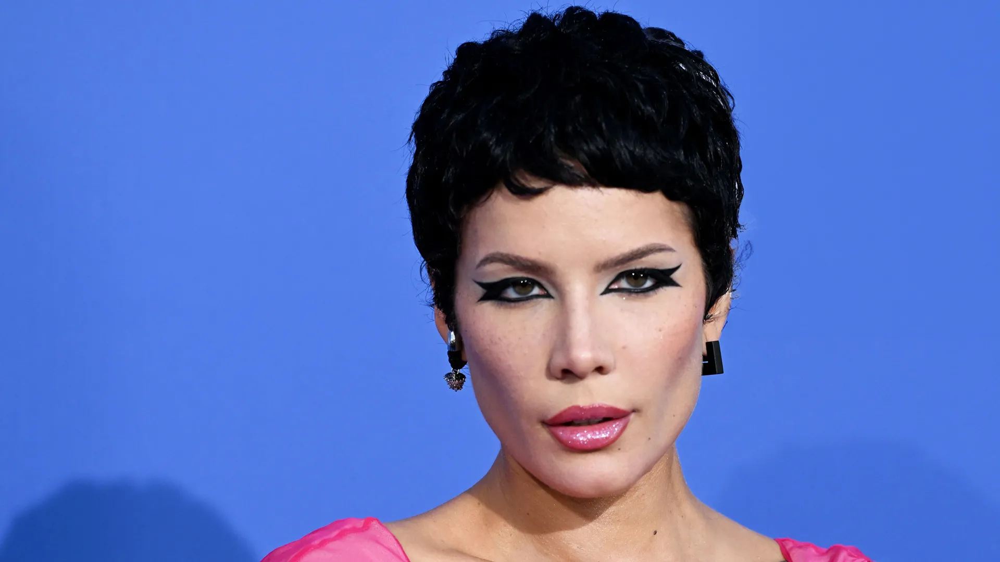

Halsey
Born: 29 September 1994
Age:
Years Active: 2012–present
Genre/s: Pop, electronic, alternative rock, R&B
Label/s: Astralwerks, Capitol, Columbia
Ashley Nicolette Frangipane (born September 29, 1994), known professionally as Halsey, is an American singer-songwriter and actress. Noted for her distinctive singing voice, she has received numerous accolades, including three Billboard Music Awards, a Billboard Women in Music Award, and an American Music Award, as well as nominations for three Grammy Awards. She was on Time's annual list of the 100 most influential people in the world in 2020.
Halsey was born and grew up in Central Jersey. Gaining attention from self-released music on social media platforms, she signed with Astralwerks in 2014 and released her debut extended play (EP), Room 93, in October of that year. Her debut studio album, Badlands (2015), was met with critical and commercial success—debuting at number two on the Billboard 200. It was certified double platinum by the Recording Industry Association of America (RIAA), along with its singles "Colors", "Gasoline" and "New Americana", the latter of which became her first entry on the US Billboard Hot 100 at number 60.
In 2016, Halsey co-performed with the Chainsmokers on their single "Closer", which topped the charts in the US and ten countries, also receiving a 14× platinum certification from the RIAA. Her second studio album, Hopeless Fountain Kingdom (2017) embodied a more "radio-friendly" sound and debuted atop the Billboard 200, while its singles "Now or Never" and "Bad at Love", both entered the top 20 of the Billboard Hot 100—the latter peaked within the top five. Her 2018 single, "Eastside" (with Benny Blanco and Khalid), found continued success and peaked within the top ten. Later that year, she was moved to Capitol Records.
Halsey's third studio album, Manic (2020), became her best selling album worldwide. Its lead single, "Without Me" topped the Billboard Hot 100, received a diamond certification from the RIAA, and yielded her furthest commercial success as a lead artist. Her fourth album, If I Can't Have Love, I Want Power (2021), moved away from her previous sound in favor of a darker industrial sound to generally positive reception. She then parted ways with Capitol in 2023, following a controversy surrounding the release of her non-album single, "So Good" the year prior. After signing with Columbia Records, Halsey's fifth studio album The Great Impersonator followed in 2024. By 2020, Billboard reported that her albums had sold over one million combined units, and received over six billion streams in the United States. Aside from music, she has been involved in suicide prevention awareness, sexual assault victim advocacy, and racial justice protests.